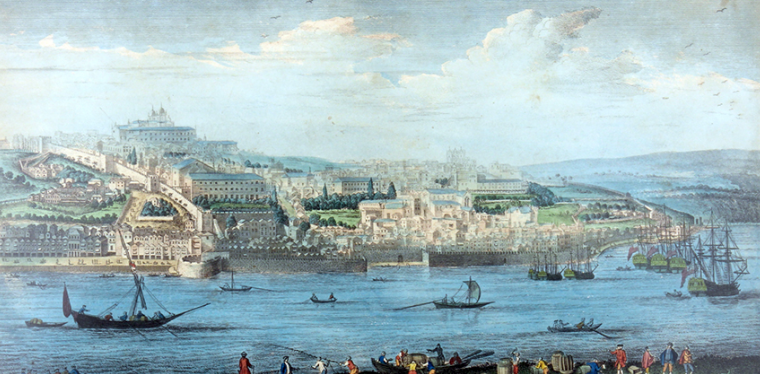

A cidade do Porto tem mais de 2.000 anos de história e deu o próprio nome a Portugal a partir da antiga designação romana Portus Cale. Conhecida como a "Cidade Invicta" pela sua resistência em cercos e conflitos (como as Invasões Francesas e a Guerra Civil Portuguesa), o Porto combina um passado glorioso com uma identidade cultural única.
Um pouco da nossa História
Ocupada desde a Pré-história, passou por romanos, visigodos e muçulmanos antes de ser reconquistada e doada por Afonso VI de Leão ao conde Vímara Peres em 868 (dando origem ao Condado Portucalense).
Concelho do Porto
As delimitações geográficas atuais, determinam um território diversificado que apresenta vestígios de ocupação humana desde a Pré-história Mesolítico e Calcolítico - até à Idade do Bronze e Idade do Ferro, em áreas afastadas do centro da cidade, como Campanhã, Aldoar e Nevogilde.
Os primeiros vestígios do castro proto-histórico, que deu origem à cidade do Porto, surgem no morro da Sé ou da Penaventosa, com características similares a outros castros do noroeste peninsular. No Arqueossítio (Rua de D. Hugo n.º 5) foram encontrados objetos de uso quotidiano e construções datáveis dos séculos IV-III a.C. e nas proximidades outros achados atestam uma ocupação que terá origem nos primeiros séculos do 1 milénio aC..Na Rua de Penaventosa surgiram vestígios do pano de muralha que cercava este núcleo primitivo.
Castro de Cale
As ligações comerciais com o mundo romano, apresentando um nível significativo de romanização no século I d.C., provavelmente relacionado com a reorganização implantada por Augusto. Na fase tardo-romana, a “civitas” expande-se para o morro da Cividade e pela encosta da Penaventosa e atinge a zona da Ribeira, como comprovaram as escavações arqueológicas da Casa do Infante e área envolvente, onde foram encontrados vestígios de importantes edifícios inseridos numa malha urbana regular. A crescente dinâmica portuária terá reforçado o papel de Cale como polo catalisador da economia regional, surgindo as primeiras referências a Portucale.
